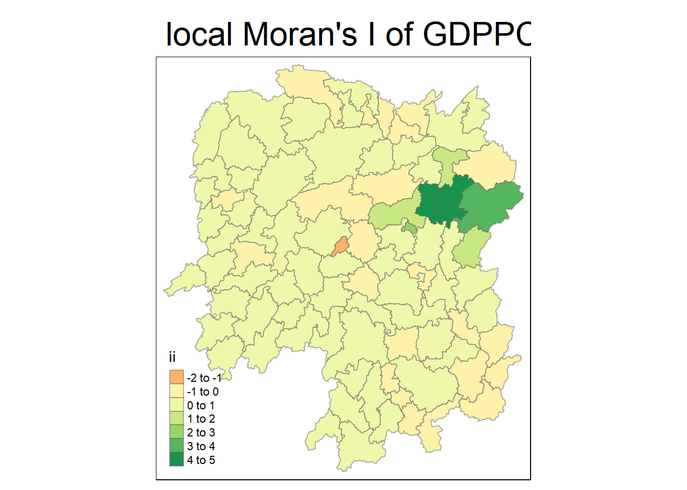
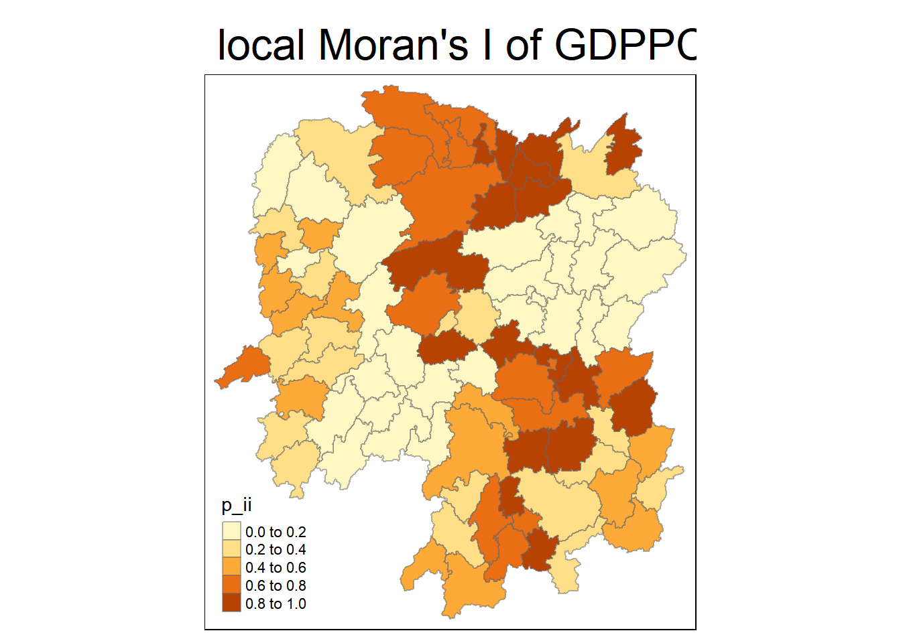
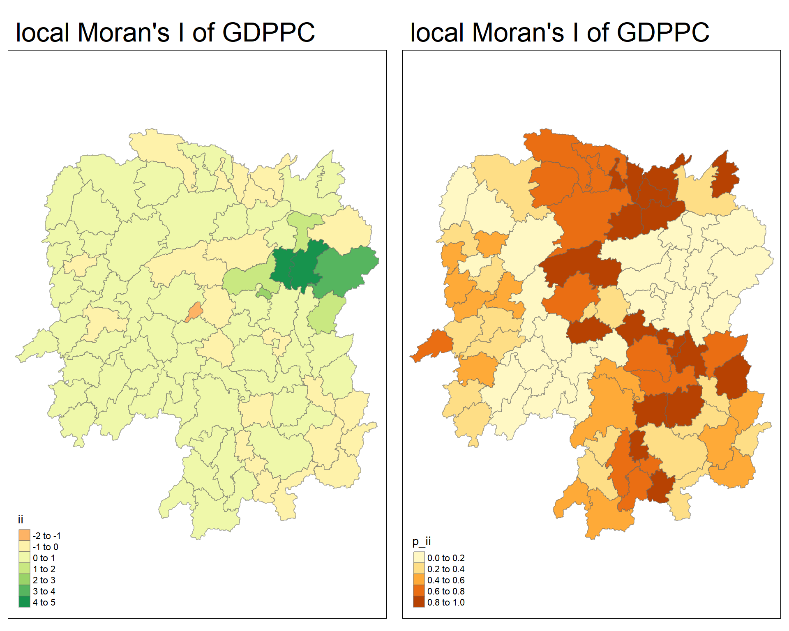
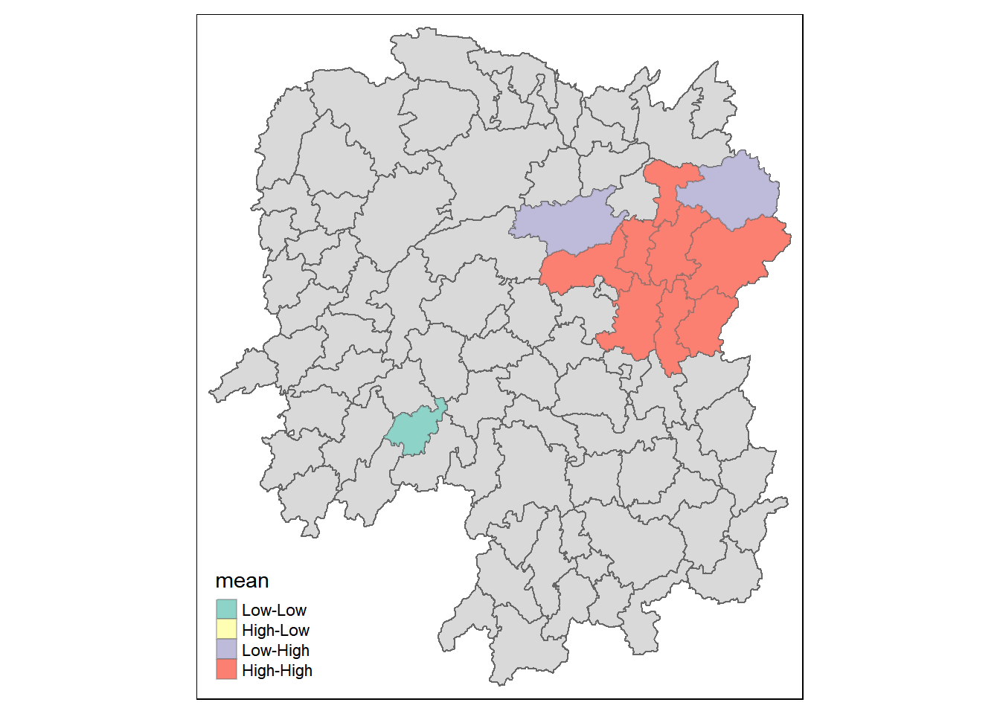
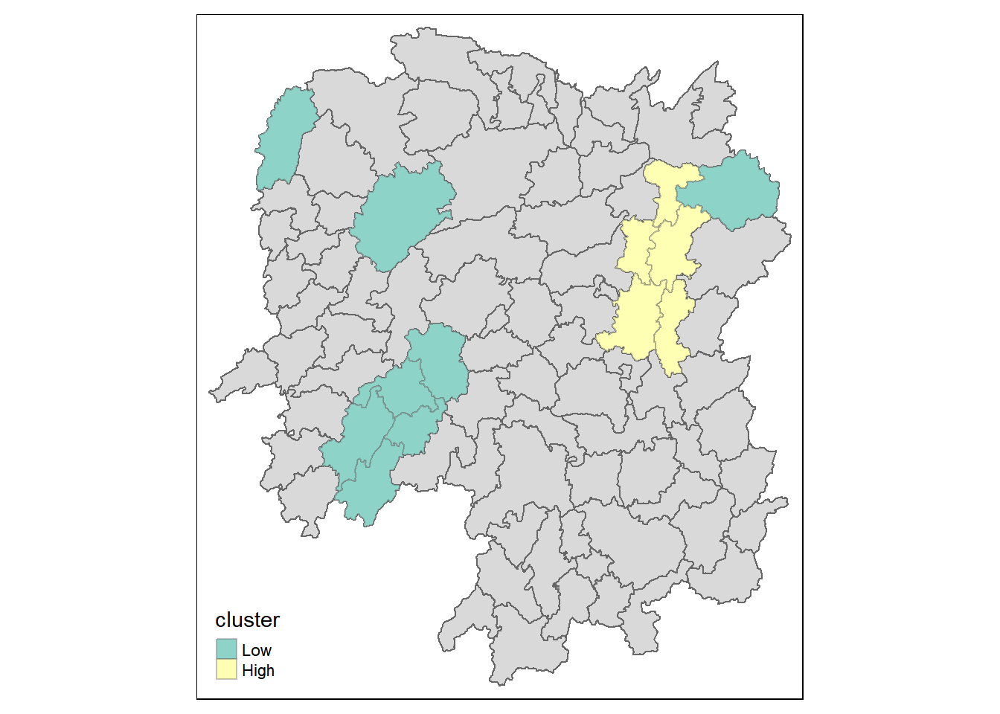

pacman::p_load(sf, spdep, tmap, tidyverse, sfdep)In Class Exercise 6 : Geospatial Data Science
1.0 Installing and Loading the R Packages
2.0 Importing the data
Two data sets will be used in this hands-on exercise, they are:
Hunan county boundary layer. This is a geospatial data set in ESRI shapefile format.
Hunan_2012.csv: This csv file contains selected Hunan’s local development indicators in 2012.
hunan <- st_read(dsn = "data/geospatial", layer = "Hunan")Reading layer `Hunan' from data source
`C:\Users\jiale\Desktop\IS415\IS415-GAA\In_Class_Exercises\In_Class_Exercise_6\data\geospatial'
using driver `ESRI Shapefile'
Simple feature collection with 88 features and 7 fields
Geometry type: POLYGON
Dimension: XY
Bounding box: xmin: 108.7831 ymin: 24.6342 xmax: 114.2544 ymax: 30.12812
Geodetic CRS: WGS 84hunan <- st_transform(hunan, crs = 4490)hunan2012 <- read_csv("data/aspatial/Hunan_2012.csv") Rows: 88 Columns: 29
── Column specification ────────────────────────────────────────────────────────
Delimiter: ","
chr (2): County, City
dbl (27): avg_wage, deposite, FAI, Gov_Rev, Gov_Exp, GDP, GDPPC, GIO, Loan, ...
ℹ Use `spec()` to retrieve the full column specification for this data.
ℹ Specify the column types or set `show_col_types = FALSE` to quiet this message.hunan_GDPPC <- left_join(hunan,hunan2012) %>%
select(1:4, 7, 15)Joining with `by = join_by(County)`3.0 Global Measures of Spatial Association
3.1 Step 1: Deriving Queen’s Contiguity Weights: SFDep Methods
wm_q <- hunan_GDPPC %>%
mutate(
nb = st_contiguity(geometry),
wt = st_weights(nb, style = "W"),
.before = 1
)3.2 Step 2: Computing Global Moran’ I
moranI <- global_moran(wm_q$GDPPC,
wm_q$nb,
wm_q$wt
)
glimpse(moranI)List of 2
$ I: num 0.301
$ K: num 7.64K is the average number that they found
3.3 Step 3: performing Global Moran’s I Test
global_moran_test(wm_q$GDPPC,
wm_q$nb,
wm_q$wt
)
Moran I test under randomisation
data: x
weights: listw
Moran I statistic standard deviate = 4.7351, p-value = 1.095e-06
alternative hypothesis: greater
sample estimates:
Moran I statistic Expectation Variance
0.300749970 -0.011494253 0.004348351 This is basically the idea that MORAN I shows there’s clustering but not a strong one and since the P value is low, we do it.
Look at the p-value first, then we do not have the statistical analysis.
3.4 Step 4: Performing Global Moran’s I Permutation Test (Use this for Take Home -2)
Do this for statistical test, to ensure it’s reproducible, set seed.
set.seed(1234)
global_moran_perm(wm_q$GDPPC,
wm_q$nb,
wm_q$wt,
nsim = 99
)
Monte-Carlo simulation of Moran I
data: x
weights: listw
number of simulations + 1: 100
statistic = 0.30075, observed rank = 100, p-value < 2.2e-16
alternative hypothesis: two.sidedThis simulates and permutates the the test permutation test. So basically we do 100 test and see if the p-value to reject or not.
4.0 Local Measures of Spatial Association
Compute Local Moran’s I of GDPPC at county level by using local_moran() of spdep package
The code takes the
wq_qdata frame (which contains geographical data and information about spatial neighbors and weights).It calculates the Local Moran’s I for the GDPPC variable, taking into account the spatial relationships (through
nbandwt) and running 99 simulations to evaluate significance.The results of the Local Moran’s I (which may include the Moran’s I statistic, z-scores, and pseudo p-values) are placed in a new column called
local_moran.Finally,
unnest()flattens the result, so all the relevant information (e.g., Moran’s I statistic, p-value) is available in separate columns for easier interpretation.
Summary of steps
Calculate Local Moran’s I for GDPPC.
Incorporate the contiguity neighbor list and spatial weights.
Run 99 simulations to determine statistical significance.
Unnest the results to make them easier to analyze
lisa <- wm_q %>%
mutate( local_moran = local_moran(
GDPPC, nb ,wt, nsim = 99),
.before = 1) %>%
unnest(local_moran)
lisaSimple feature collection with 88 features and 20 fields
Geometry type: POLYGON
Dimension: XY
Bounding box: xmin: 108.7831 ymin: 24.6342 xmax: 114.2544 ymax: 30.12812
Geodetic CRS: China Geodetic Coordinate System 2000
# A tibble: 88 × 21
ii eii var_ii z_ii p_ii p_ii_sim p_folded_sim skewness
<dbl> <dbl> <dbl> <dbl> <dbl> <dbl> <dbl> <dbl>
1 -0.00147 0.00177 0.000418 -0.158 0.874 0.82 0.41 -0.812
2 0.0259 0.00641 0.0105 0.190 0.849 0.96 0.48 -1.09
3 -0.0120 -0.0374 0.102 0.0796 0.937 0.76 0.38 0.824
4 0.00102 -0.0000349 0.00000437 0.506 0.613 0.64 0.32 1.04
5 0.0148 -0.00340 0.00165 0.449 0.654 0.5 0.25 1.64
6 -0.0388 -0.00339 0.00545 -0.480 0.631 0.82 0.41 0.614
7 3.37 -0.198 1.41 3.00 0.00266 0.08 0.04 1.46
8 1.56 -0.265 0.804 2.04 0.0417 0.08 0.04 0.459
9 4.42 0.0450 1.79 3.27 0.00108 0.02 0.01 0.746
10 -0.399 -0.0505 0.0859 -1.19 0.234 0.28 0.14 -0.685
# ℹ 78 more rows
# ℹ 13 more variables: kurtosis <dbl>, mean <fct>, median <fct>, pysal <fct>,
# nb <nb>, wt <list>, NAME_2 <chr>, ID_3 <int>, NAME_3 <chr>,
# ENGTYPE_3 <chr>, County <chr>, GDPPC <dbl>, geometry <POLYGON [°]>There will be three p_values,
P_iiis the base methodP_ii_simbase on simulationP_folded_sim(use kfold)
stay consistent and use p_ii_sum .
Mean, median pysal for how deviation
IF Skew follows normal distribution, use median,
If Skewness is close to 0 use mean.
Mean-> for clusteringMedian ->for clusteringpysal
4.1 Visualising the Local Moran’s I
tmap_mode("plot")tmap mode set to plottingtm_shape(lisa) +
tm_fill("ii") +
tm_borders(alpha = 0.5) +
tm_view(set.zoom.limits = c(6,8)) +
tm_layout(main.title = "local Moran's I of GDPPC",
main.title.size = 2)Variable(s) "ii" contains positive and negative values, so midpoint is set to 0. Set midpoint = NA to show the full spectrum of the color palette.
tmap_mode("plot")tmap mode set to plottingtm_shape(lisa) +
tm_fill("p_ii") +
tm_borders(alpha = 0.5) +
tm_view(set.zoom.limits = c(6,8)) +
tm_layout(main.title = "local Moran's I of GDPPC",
main.title.size = 2)
4.3 Visualising the Local Moran’s I P value and II
map1 <-
tm_shape(lisa) +
tm_fill("ii") +
tm_borders(alpha = 0.5) +
tm_view(set.zoom.limits = c(6,8)) +
tm_layout(main.title = "local Moran's I of GDPPC",
main.title.size = 2)
map2 <- tm_shape(lisa) +
tm_fill("p_ii") +
# breaks=c(-Inf, 0.001, 0.01, 0.05, 0.1, Inf)
tm_borders(alpha = 0.5) +
tm_view(set.zoom.limits = c(6,8)) +
tm_layout(main.title = "local Moran's I of GDPPC",
main.title.size = 2)
tmap_arrange(map1, map2, ncol =2)Variable(s) "ii" contains positive and negative values, so midpoint is set to 0. Set midpoint = NA to show the full spectrum of the color palette.
5.0 Visualising LISA Map
lisa_sig <- lisa %>%
filter(p_ii < 0.05)
tmap_mode("plot")tmap mode set to plottingtm_shape(lisa) +
tm_polygons() +
tm_borders(alpha = 0.5) +
tm_shape(lisa_sig) +
tm_fill("mean") +
tm_borders(alpha = 0.4)Warning: One tm layer group has duplicated layer types, which are omitted. To
draw multiple layers of the same type, use multiple layer groups (i.e. specify
tm_shape prior to each of them).
6.0 Computing Local Gi* statssitics
spatial weight matrix
wm_idw <- hunan_GDPPC %>%
mutate( nb = st_contiguity(geometry),
wts = st_inverse_distance(nb, geometry,
scale = 1,
alpha = 1),
.before = 1)! Polygon provided. Using point on surface.Warning: There was 1 warning in `stopifnot()`.
ℹ In argument: `wts = st_inverse_distance(nb, geometry, scale = 1, alpha = 1)`.
Caused by warning in `st_point_on_surface.sfc()`:
! st_point_on_surface may not give correct results for longitude/latitude data
Note
GI* and Local Gi* are distanced-based spatial statistics. Hence, distance methods instead of contiguity methods should be used to derive the spatial weight matrix.
Compute the local Gi* by using the code cchunk
HCSA <- wm_idw %>%
mutate(local_Gi = local_gstar_perm(
GDPPC, nb, wy, nsim = 99),
.before = 1) %>%
unnest(local_Gi)
HCSASimple feature collection with 88 features and 18 fields
Geometry type: POLYGON
Dimension: XY
Bounding box: xmin: 108.7831 ymin: 24.6342 xmax: 114.2544 ymax: 30.12812
Geodetic CRS: China Geodetic Coordinate System 2000
# A tibble: 88 × 19
gi_star cluster e_gi var_gi std_dev p_value p_sim p_folded_sim skewness
<dbl> <fct> <dbl> <dbl> <dbl> <dbl> <dbl> <dbl> <dbl>
1 0.0416 Low 0.0114 0.00000641 0.0493 9.61e-1 0.7 0.35 0.875
2 -0.333 Low 0.0106 0.00000384 -0.0941 9.25e-1 1 0.5 0.661
3 0.281 High 0.0126 0.00000751 -0.151 8.80e-1 0.9 0.45 0.640
4 0.411 High 0.0118 0.00000922 0.264 7.92e-1 0.6 0.3 0.853
5 0.387 High 0.0115 0.00000956 0.339 7.34e-1 0.62 0.31 1.07
6 -0.368 High 0.0118 0.00000591 -0.583 5.60e-1 0.72 0.36 0.594
7 3.56 High 0.0151 0.00000731 2.61 9.01e-3 0.06 0.03 1.09
8 2.52 High 0.0136 0.00000614 1.49 1.35e-1 0.2 0.1 1.12
9 4.56 High 0.0144 0.00000584 3.53 4.17e-4 0.04 0.02 1.23
10 1.16 Low 0.0104 0.00000370 1.82 6.86e-2 0.12 0.06 0.416
# ℹ 78 more rows
# ℹ 10 more variables: kurtosis <dbl>, nb <nb>, wts <list>, NAME_2 <chr>,
# ID_3 <int>, NAME_3 <chr>, ENGTYPE_3 <chr>, County <chr>, GDPPC <dbl>,
# geometry <POLYGON [°]>7.0 visualisating Gi*
Be clear on the hotspot and clustering. terminology . LISA keep it to cluster, and HSCA hot/cold
Visualising hotspot and cold spot areas. with signifcant values
HCSA_sig <- HCSA %>%
filter(p_sim <0.05)
tmap_mode("plot")tmap mode set to plottingtm_shape(HCSA) +
tm_polygons() +
tm_borders(alpha = 0.5) +
tm_shape(HCSA_sig) +
tm_fill("gi_star") +
tm_borders(alpha = 0.4)Warning: One tm layer group has duplicated layer types, which are omitted. To
draw multiple layers of the same type, use multiple layer groups (i.e. specify
tm_shape prior to each of them).Variable(s) "gi_star" contains positive and negative values, so midpoint is set to 0. Set midpoint = NA to show the full spectrum of the color palette.